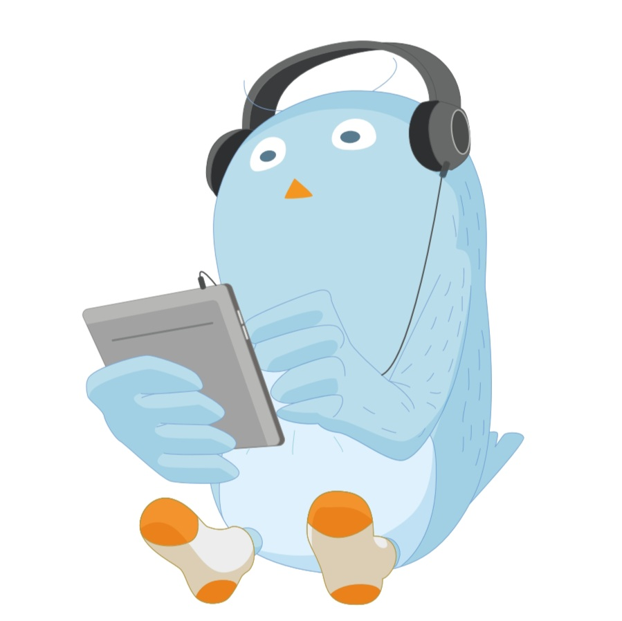

HAPPY BUDDY DAY !
00
:
00
pm
여행 성향 테스트 결과
여행의 리듬 디자이너
계획적인 여유 여행자

당신은 여행에서 충분한 준비와 계획을 중요시하는 동시에 여유를 즐기는 여행자입니다. 여행 전에 일정을 체계적으로 정리하지만, 그 일정 안에서 느긋함을을 느끼고 싶은 스타일이에요. 따라서 다양한 액티비티를 계획하면서도, 휴식의 순간도 놓치지 않는 여행을 선호합니다. 또한 사진보다는 그 순간을 기억하고 즐기려는 성향이 강합니다.
Tips
여유 시간을 충분히 고려해, 일정에 유동성을 둬보세요.
본인의 휴식 성향을 파악하고 이를 잘 실현할 수 있는 곳으로 여행지를 골라보세요!
Best Spots
스위스 제네바: 기차로 유럽을 여행하며 여유로운 분위기를 즐기기에 완벽한 도시입니다.
프랑스 니스: 해변과 고풍스러운 거리가 여행의 여유를 느낄 수 있는 곳입니다.
캐나다 밴프: 자연을 즐기며 차분하게 여유를 즐길 수 있는 지역입니다.